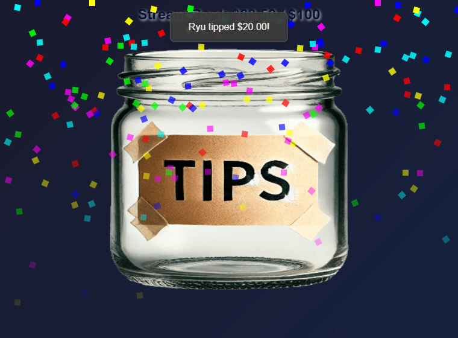
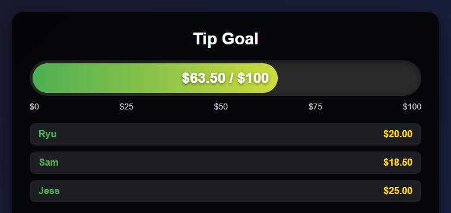

Donation mode or Hype scoring?
| Mode | What it counts | Best for |
|---|---|---|
| Normal Tip Jar | Super Chats, Cheers/Bits, tips, and other payloads with a donation amount | Money or native-unit goals |
| Donation count | Each qualifying paid event as one, regardless of its value | Goals such as 7 / 20 Super Chats |
| Hype Cup Scoring | Donations, memberships/subscriptions, renewals, and gifted memberships/subscriptions | One combined supporter-points goal |
Changing Jar to Bar only changes the appearance. Enable Hype Cup Scoring when memberships or subscriptions should move the goal.


style=meter): the same goal shown as a progress bar with recent supporters.Set it up
- Activate the YouTube, Twitch, or other source in Social Stream Ninja.
- Open Tip Jar and Goal Meter, then open its options.
- Leave Hype Cup Scoring off for a donation-only goal. Enable it for a mixed supporter goal.
- Choose whether the goal measures donation value or the number of qualifying donations.
- Choose the display style, goal, title, source/event filters, and persistence behavior.
- Copy the updated Tip Jar link and add it to OBS as a Browser Source.
Session check: The source and copied overlay URL must use the same session ID. Keep session and password values private.
Count YouTube Super Chats instead of money
- Leave Hype Cup Scoring off.
- Set Goal measures to Number of qualifying donations.
- Set Source filter to YouTube.
- Set Paid event filter to Super Chats only.
- Set the goal target, such as
20. The overlay displays progress such as7 / 20 Super Chats.
Super Chat value does not affect a count goal: a $1 Super Chat and a $100 Super Chat each add one. Memberships, gifted memberships, Super Stickers, and YouTube Gifts do not move a Super Chat-only goal.
Other count goals: The paid event filter can count only Super Stickers or combine Super Chats and Super Stickers. Use Count unit label to override the automatic label.
How Hype values work
- Sub/member points: fixed points for each new membership/subscription or renewal.
- Gifted sub/member points: fixed points for each gift. A bundle of 5 contributes
5 × giftpoints. - Donation points per USD: multiplier applied after supported cash donations are converted to USD.
- Point unit label: changes the displayed label. Using
$does not make membership points an exact cash value.
Mixed-goal filter: Leave Donation type filter on All donations when memberships and gifts should also count. A specific donation-unit filter currently limits Hype scoring to matching donation rows.
YouTube gifts are not all the same
| YouTube event | Meaning | How it counts |
|---|---|---|
| Super Chat / Super Sticker | A paid message with a currency amount | Normal or Hype mode |
| Gifted memberships | Someone bought memberships for other viewers | Hype mode uses gift count × configured gift points |
| Gift recipient | One viewer received a membership from the bundle | Ignored for points by default to prevent double counting |
| Jewels / virtual gifts | A separate virtual-gift event with a native-unit amount | Use the matching native-unit filter |
Gifted-membership events provide the number of memberships and membership level, but not the purchase price or creator's net revenue. Their exact cash value cannot be calculated from the event.
Avoid double counting: Enable Count individual gift recipients too only when recipient points should be added on top of the original gift bundle.
Goal completion and saved totals
- Normal donation goals retain their total unless a reset is requested.
- Hype goals reset after completion by default; the completion delay controls how long the completed value stays visible.
- Carry extra points preserves points beyond the completed goal.
- Keep total and advance target creates a cumulative rolling goal.
- Recurring goal increment creates repeating levels.
- Keep amount between sessions stores the amount and history in that browser or OBS profile.
Persistent totals are separated by normal/Hype mode and active source/unit filters, but not by Social Stream session ID. Reset the saved amount before reusing the same browser profile for a different goal.
Troubleshooting
| Symptom | What to check |
|---|---|
| Nothing updates | Source is active, overlay is open, session IDs match, and filters match the event. |
| Super Chats count but memberships do not | Enable Hype Cup Scoring and leave donation type on All donations. |
| Gifted memberships add less than expected | They use fixed gift points, not an unavailable purchase price. |
| Total drops after reaching the goal | Hype resets by default; use a rolling goal for a cumulative total. |
| An old amount returns | Persistence is enabled in the same browser or OBS profile. |
| Gift memberships appear twice | Disable individual gift-recipient counting. |
| Super Chat count includes Super Stickers | Set Paid event filter to Super Chats only. |
| Gifted memberships move a Hype goal | Enable Exclude YouTube gifted memberships, or exclude all gifts from Hype scoring. |
The popup's test buttons currently test donation rows. For membership or gift issues, use the Dock or Events Dashboard with the same session to confirm the event arrives before troubleshooting the goal.